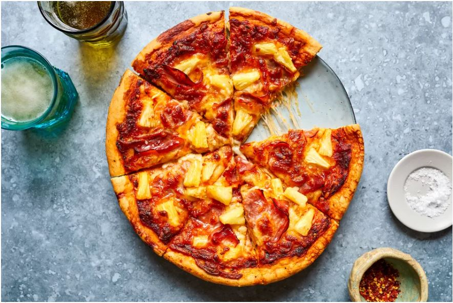

Is there a subject as divisive and controversial as the addition of pineapple to pizza? It certainly ranks right up there with topics that inspire strong opinions for and against. Pineapple on pizza is not just a topping choice like pepperoni or extra cheese—it's a position that must be defended. We are certainly not going to weigh in on this controversy, but should you happen to enjoy this particular pizza variety, it's easy to make at home. Hawaiian pizza is typically topped with tomato sauce, mozzarella cheese, sliced ham, and pineapple. Some people also sprinkle on a bit of cooked bacon. The combination of savory and fruity toppings smells delicious coming out of the oven, and might even convert a few anti-pineapple family members. Despite its name, Hawaiian pizza was not invented in Hawaii. A Greek-born Canadian named Sam Panopoulos created it for his restaurant back in 1962 as a result of his experiences with the sweet and savory flavors of Chinese food. The name Hawaiian actually came from the brand of canned pineapples that he used in the first recipe. Even though the pizza wasn't a big hit right away, the flavor combination played on the popularity of all things Hawaiian and tiki culture in the 1960s and soon became a local sensation. The unlikely flavor combination, though it still has some detractors, is still a popular favorite in many pizzerias. If you enjoy sweet and savory flavor combinations, then chances are you'll like Hawaiian pizza.
Ingredients:
Steps to Make It: